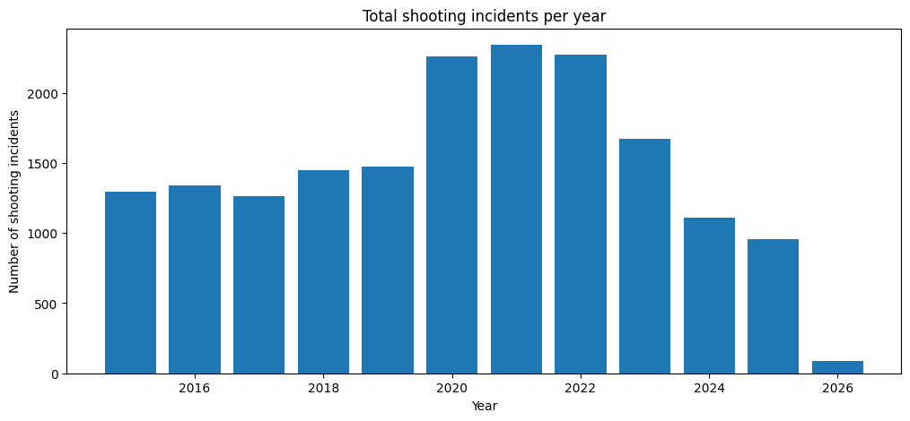
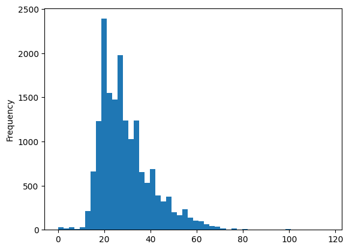
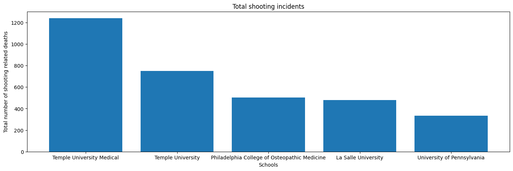
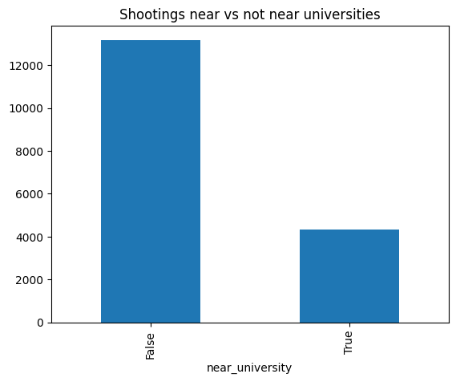
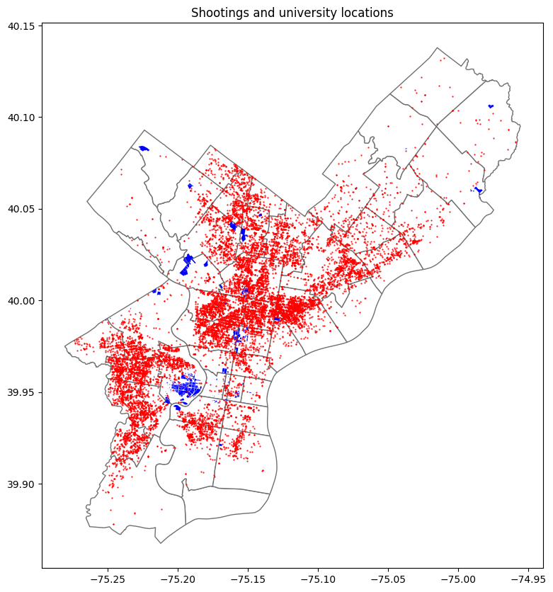

import pandas as pd
import matplotlib.pyplot as plt
import numpy as np
import geopandas as gpd
import warnings
warnings.simplefilter('ignore')shoot_df = pd.read_csv('Data/shootings.csv') universities = pd.read_csv('Data/Universities_Colleges.csv')Do shootings incidents occur near colleges and universities in Philadelphia?
Colleges and universities are often seen as safe spaces for students and people alike who are searching for their own hub inside a massive city. But being embedded in the massive framework of the city means busy streets, residential neighborhoods, and commercial districts. This means the attraction of many different kinds of people. In Philadelphia, where there are patterns of violence on a localized scale, it is important to see whether the violence (in this analysis, shooting incidents) also affects specialized hubs like college campuses. It is important to analyze whether these colleges, supposedly considered “safe havens,” have proximity to higher areas of risk.
Contextualizing the DATA
The total number of shooting incidents recorded in Philadelphia:
print("The total number of shooting incidents recorded in Philadelphia:", len(shoot_df))The total number of shooting incidents recorded in Philadelphia: 17516Shooting incidents recorded in Philadelphia per year:
shoot_df.groupby('year').size()year
2015 1294
2016 1342
2017 1265
2018 1447
2019 1473
2020 2259
2021 2342
2022 2269
2023 1672
2024 1112
2025 954
2026 87
dtype: int64Just in 2025, 1 in 1,572 people were in shooting incidents in the city of Philadelphia.
Shooting incidents per year graphed
year_counts = shoot_df.groupby('year').size()
plt.figure(figsize=(12,5))
plt.bar(year_counts.index, year_counts.values)
plt.xlabel('Year')
plt.ylabel('Number of shooting incidents')
plt.title('Total shooting incidents per year')
plt.show()
The shooting patterns reveal that between the years of 2015 to 2019, shooting incidents seemed remain at the same levels. However, beginning 2020, there was a sharp and sustained increase with the incidents peaking at over 2,300 in 2021. After this peak, shooting incidents gradually decreased. This pattern could be explained by the increase of allocated police budgets in the city of Philadelphia.
Victim ages of these shooting incidents graphed:
shoot_df['age'].plot(kind='hist', bins=50)
plt.show()
Most of the victims seem to fall in the 20-40 age range.
Victim races of these shooting incidents graphed:
shoot_df['race'].value_counts().plot(kind='bar')
plt.show()
Most of the victims seem to be either Black or White.
Introducing Universities:
import geopandas as gpd
universities_gpd = gpd.read_file('data/Universities_Colleges.geojson')shootings_gdf = gpd.GeoDataFrame(
shoot_df,
geometry=gpd.points_from_xy(shoot_df['lng'], shoot_df['lat']),
crs='EPSG:4326'
)universities_coordinates = universities_gpd.to_crs(epsg=3857)
shootings_coordinates = shootings_gdf.to_crs(epsg=3857)university_buffers = universities_coordinates.copy()
university_buffers['geometry'] = university_buffers.geometry.buffer(800)shoot_combine = gpd.sjoin(shootings_coordinates, university_buffers)shoot_combine_unique = shoot_combine.drop_duplicates(subset='dc_key')top_universities = (shoot_combine_unique.groupby('name').size().sort_values(ascending=False))The Top 15 universities with the most shooting incidents:
These are the top 15 universities with the most shooting incidents in total as recorded:
top_universities.head(15)name
Temple University Medical 1240
Temple University 751
Philadelphia College of Osteopathic Medicine 503
La Salle University 480
University of Pennsylvania 335
Community College of Philadelphia 168
Drexel University 157
University of the Arts 84
JNA School of Culinary Arts 53
Thomas Jefferson University 48
University of the Sciences in Philadelphia 44
Lutheran Theological Seminary 12
Philadelphia University 11
Saint Joseph's University 10
Holy Family University 4
dtype: int64Top 5 Universites with the most shooting incidents graphed:
top5 = top_universities.head(5)
plt.figure(figsize=(17,5))
plt.bar(top5.index, top5.values)
plt.xlabel('Schools')
plt.ylabel('Total number of shooting related deaths')
plt.title('Total shooting incidents')
plt.show()
As seen Temple University Medical and Temple University have the most amount of shootings accounted for, this could be explained by both campuses being located in North Philadelphia where shooting incidents are more densely concentrated. The high number of shooting incidents reflect broader neighborhood patterns than the safety of the university itself.
BUT….
shoot_df['near_university'] = shoot_df.index.isin(shoot_combine.index)
shoot_df['near_university'].value_counts()near_university
False 13181
True 4335
Name: count, dtype: int64Only about 32% of the total shooting incidents in Philadelphia occur near University campuses.
shoot_df['near_university'].value_counts().plot(kind='bar')
plt.title('Shootings near vs not near universities')
plt.show()
zip_gpd=gpd.read_file('data/Zipcodes_Poly.geojson').to_crs(crs=4326)Visualization of shootings and university locations:
Red indicates the isolated shooting incidents and the blue represents the university locations
base = zip_gpd.plot(color='white', edgecolor='#707070', figsize=(10,10))
shootings_gdf.plot(ax=base, color='red', markersize=0.3)
universities_gpd.plot(ax=base, color='blue', markersize=30)
plt.title('Shootings and university locations')
plt.show()